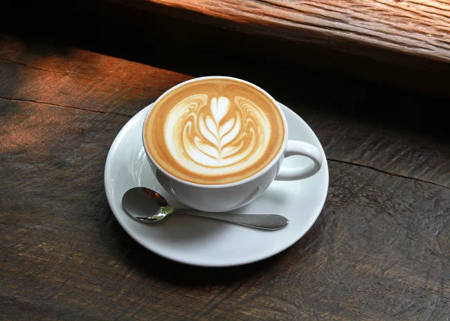
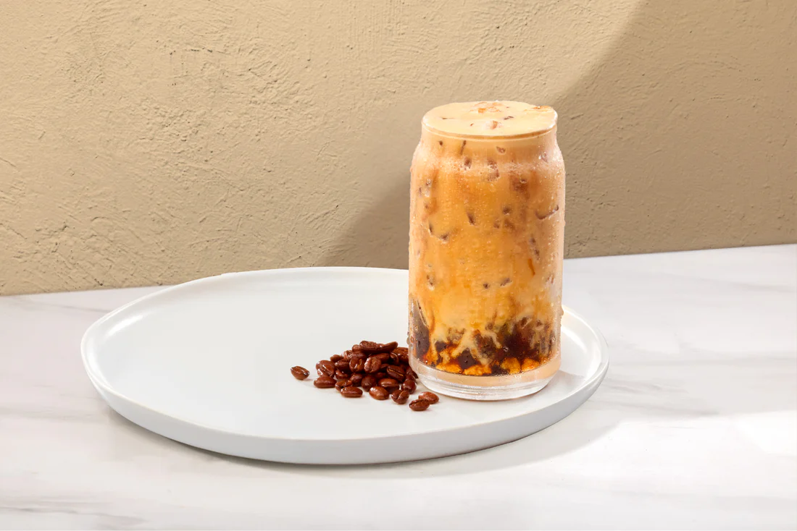
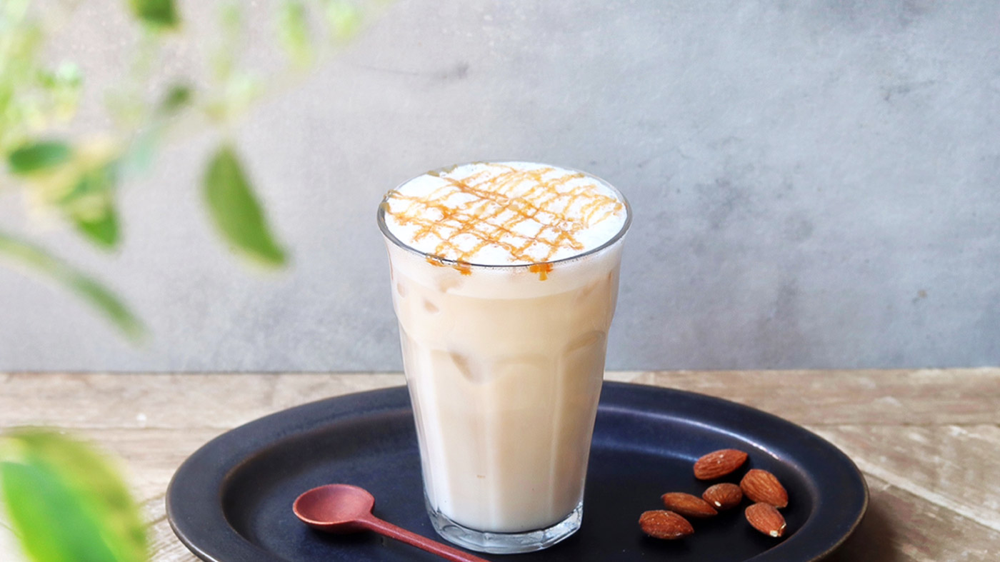

Americano
A classic espresso with hot water.

Spanish Latte
A creamy espresso with sweet milk.

Iced Shaken Espresso
A smooth and refreshing iced coffee.

Iced Caramel Macchiato
A layered iced coffee with caramel.